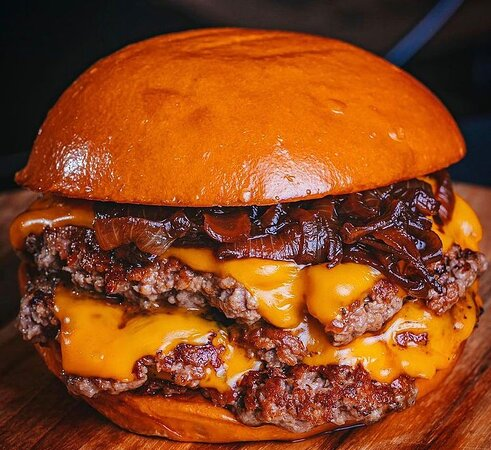

Smash Burger

Description
This burger is a fast burger recipe that tastes better than all other
burger recipes.
It is quick to make and it is cheap and rather healthy all things considdered
Ingredients
- ground beef - 250g
- Dijon Mustard - 2 Tbsp
- Salt - 1 Tsp
- Pepper - 0.5 Tsp
Steps
- Start by heating a pan on medium-high heat with oil, continue with the rest of the steps while the pan is heating up.
- Take all the ingredients and add them to a bowl.
- Mix everything in the bowl and roll it into four
equally large balls.
- Put one ball in the hot pan and press on it with a flat surface, making the ball flat and thin
- Let the meat fry for one minute before turning it around on the other side. Let it sit on the other side for one minute before taking it of the pan.
- Repeat step 4 and 5 untill all balls are made into fried patties.
- Assemble two burgers using two patties for each piece of bread.
- Viola!